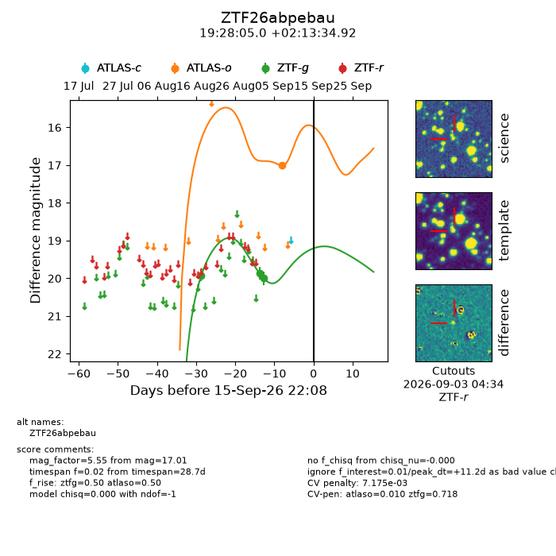
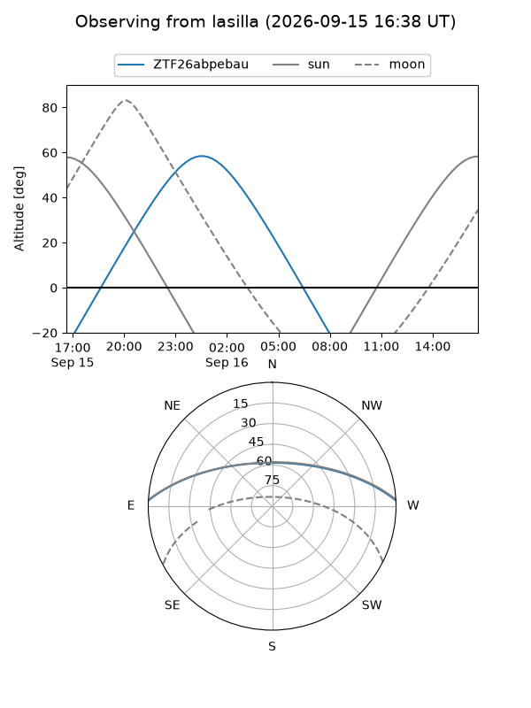
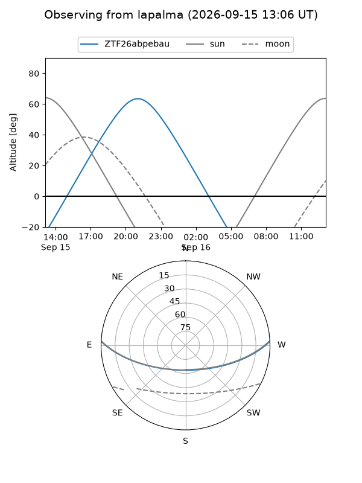
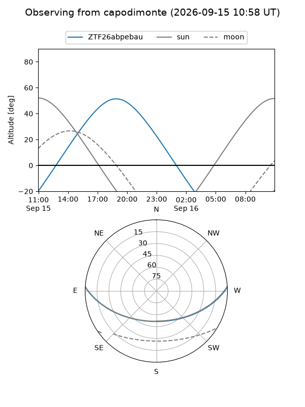
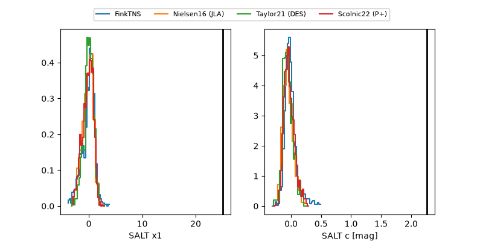

ZTF26abpebau
Target ZTF26abpebau at 2026-09-16 09:40
Aliases and brokers:
FINK-ZTF: ztf.fink-portal.org/ZTF26abpebau
Lasair-ZTF: lasair-ztf.lsst.ac.uk/objects/ZTF26abpebau
ALeRCE-ZTF: alerce.online/object/ZTF26abpebau
Direct TNS query: direct search
alt names
ZTF26abpebau (ztf,fink_ztf)
Coordinates:
equatorial (ra, dec) = 292.0208,+2.22637
equatorial (HMS+DMS) = 19:28:05.00,+02:13:34.92
galactic (l, b) = (39.1291,-7.11601)
Flags:
peak dt: +11.7
likely cv: !!
Photometry:
last atlaso=17.01, ztfg=20.00
1 atlaso, 3 ztfg detections
Lightcurve

Visibility



Additional plots
